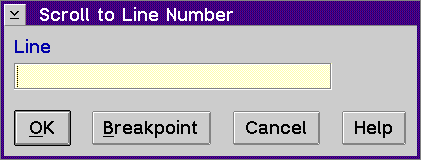

Displays the Scroll to Line Number window, which allows you to go to a particular line in your program or set a line breakpoint.
To use the Scroll to Line Number window to scroll to a specific line:
Note: If the Source window is active, just type a number and the Scroll to Line Number window automatically displays.
To use the Scroll to Line Number window to set a breakpoint: